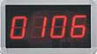
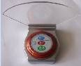
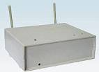
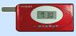

無線呼叫系統
系統功能介紹:
無線呼叫系統由數位伺服器，呼叫器和接收器三部份組成。呼叫器配置于顧客端（如包房，餐台，雅座等），呼叫器擁主要有二個功能鍵:“呼叫”鍵和“取消”鍵。使用者根據不同的呼叫需求，按下呼叫器上對應的功能按鍵，呼叫器發出呼叫資訊；數位伺服器收到呼叫請求並在LED屏上顯示，移動接收器也同時收到相對應的呼叫資訊。收到取消資訊，數位伺服器和移動接收器上相應號碼消失。移動接收器可以用振動或聲音方式來提示工作人員收到呼叫資訊。多個呼叫資訊則輪流顯示，當按下呼叫器的“取消”鍵後，移動接收器收到相應取消資訊則相應號碼消失。該系統一個數位伺服器可以配置9999個呼叫器及接收器，每個接收器最多可以設置接收50個呼叫器的資訊。特有的呼叫功能,是為了縮短上菜時間,提高工作效率,增加客人滿意度。
系統產品介紹:

數字伺服器 |
技術規格：
發射功率：20mW
傳輸距離：1000米（空曠處）
外形尺寸：350mmX210mmX80mm
特點：用於顯示四位元編碼呼叫器資訊. |
|

呼叫器 |
技術規格：
電池：9v電池
發射功率：20mW
傳輸距離：1000米（空曠處）
外形尺寸：90mmX90mmX35mm
特點：帶菜牌底座，可自訂多種呼叫功能 |
|

信號增強器 |
技術規格：
發射功率：40mW
外形尺寸：200mmX165mmX80mm
功能：增加呼叫符號的傳輸距離 |

移動接收器
|
技術規格：
電池：3.7V 600mAH 鋰離子電池
液晶顯示幕：25mm×10mm
外形尺寸： 77mm×37mm×15mm
重量：65g
特點：帶聲音或者振動提示功能 |
|
系統適用範圍:
各類餐廳
茶樓
工廠
醫院
網吧
銀行櫃檯
系統使用優點:
無線接收 , 無需佈線
民用頻率，超低功率，環保健康
數位傳輸，信號穩定，收發快速
功能齊全，外觀精美
適用範圍廣，使用價值明顯
系統方案設計 ：
數位伺服器安裝在大廳（根據需要可配置一至多台，支援同步顯示）。
每張餐桌上安裝一台呼叫器。
服務員與主管可選擇性地配置移動接收機。
根據實施環境適當配置一至多台信號增強器。
使用效果 ：
服務人員可以不隨時站在客人旁邊等待，當客人有需要時只需要按下呼叫器上面的呼叫功能健，服務員就知道是那桌客人需要什麼樣的服務，簡單，明朗的溝通方式。客人不用到處尋找服務員。使用餐環境更安靜，舒適。提高服務品質，增加顧客回頭率高。
用戶回饋：
使用移動接收呼叫系統可以保證任何情況下，主管和服務員及時有序地管理與服務。餐廳使用無線呼叫器一個服務員可同時服務多位客人，只有客人需要服務時才會出現，有效保護客人的隱私，又不會讓客人感到任何不便。 |